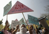
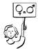
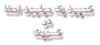
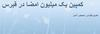
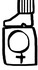
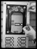

- 21 مهر 1387
نگاهی بر زندگی زنان جهان؛ تحت سیطرۀ قانون
جسیکا نوریس؛مترجم : صهبا صمدی دزفولی
- 13 مهر 1387
کمپین در تجربه ی اعضا
رزا حسامی
- 7 مهر 1387

زیر آسمان جهان
هینا شهید؛ ترجمه:سونیا غفاری
- 31 شهریور 1387

گزارش کمپین
رویا امیری
- 29 شهریور 1387
نتایج نظر سنجی در شهر خوی:
- 23 شهریور 1387
گزارش کمپین
کاوه کرمانشاهی
- 16 شهریور 1387
نقدی از درون
رزا حسامی
- 14 شهریور 1387

دوسالانه کمپین با کویت
کمپین کویت
- 11 شهریور 1387
دوسالانه کمپين با اصفهان
مهرنوش اعتمادي
- 8 شهریور 1387
دوسالانه کمپین با کالیفرنیا
روجا بندی
- 3 شهریور 1387
دوسالانه کمپین با رشت
سحرروان
- 26 مرداد 1387
مبارزه زنان برای حضانت کودکان در هند
مترجم : فریبا شهلایی
- 25 مرداد 1387

- 15 مرداد 1387

کمپین یک میلیون امضاء در قبرس :
شیوا نصر رمزی
- 8 مرداد 1387

در چالش با تمرکزگرایی
تنظیم: تارا نجد احمدی
- 4 مرداد 1387
ادامه بازداشت هانا و روناک
كاوه قاسمی كرمانشاهی
- 29 تیر 1387

کمپيني ها در 22 خرداد
گردآوري: تارا نجد احمدي
- 21 تیر 1387
گفت و گو با لینا ابوحبیب پیرامون کمپین حق تابعیت در لبنان
ترجمه : شهرزاد آل داوود ، رویا پاکزاد
- 15 تیر 1387

گزارش کمپين
کمپين آمل
- 12 تیر 1387
کمپینی برای مبارزه با خشونت جنسی
- 8 تیر 1387
کمپین درشهرستان ها
زهره اسدپور
- 1 تیر 1387
گزارشی از مراکش:
ترجمه : مرضیه بخشی زاده
- 25 خرداد 1387
22 خرداد و راه پيش رو
وبلاگ آواي روز/ ثريا آزاد فر
- 20 خرداد 1387
گفت و گو با فعالان کمپین در شيراز
آمنه شیر افکن
- 15 خرداد 1387
نقد از درون
کمپین رشت
- 11 خرداد 1387
نقد از درون
کمپین رشت
- 3 خرداد 1387

موضوع "قوانين حاکم بر زندگی زنان"، دورهي اول؛ تعدد زوجات
نسیم خسروی مقدم
- 1 خرداد 1387

نشست دو روزه رشت
زهره اسدپور
- 27 اردیبهشت 1387
همراهی علیه نابرابری
گفتگو: نیلوفرگلکار/مریم مالک
- 19 اردیبهشت 1387
زنان پیشگام حقوق زنان در منطقه
ترجمه هما مداح